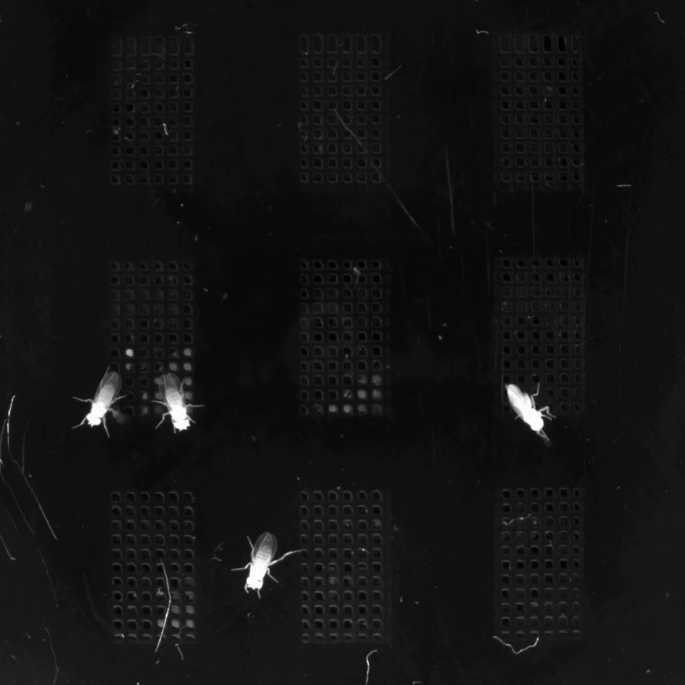
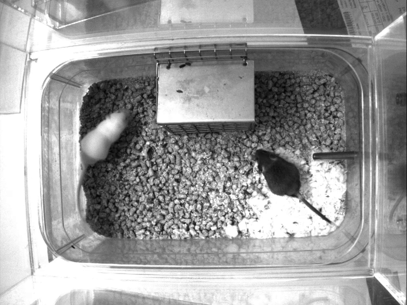
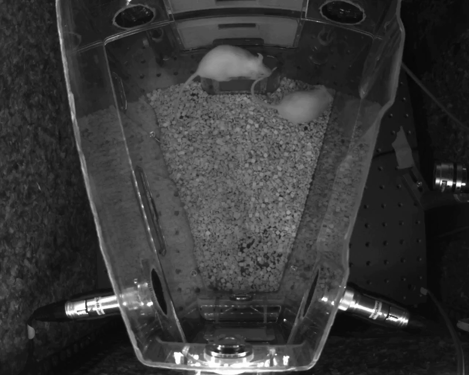
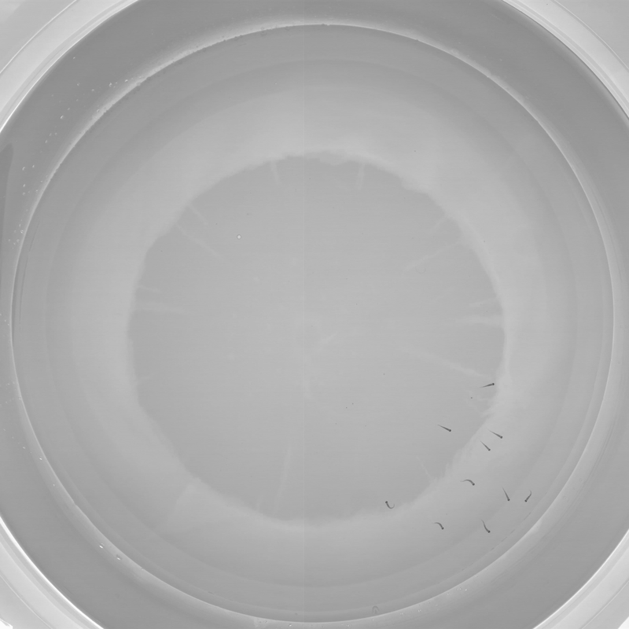
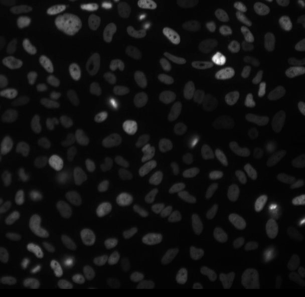
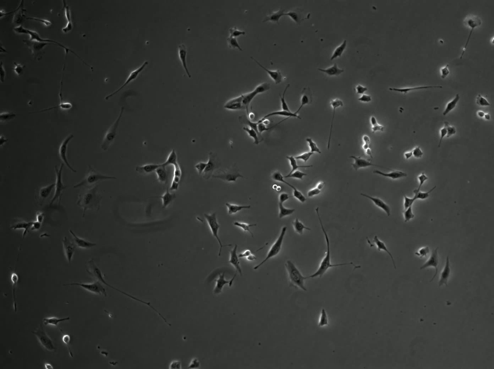

Choosing Parameters¶
Load your detections (and your video, if you have it) and this page suggests dreem track settings for your data, with the reason for each. Everything runs in your browser: no file leaves your computer. Below the helper, examples from the training datasets show which settings suit which kind of data.
| Setting | Suggestion | Why |
|---|
How the suggestions are made¶
| Setting | Suggested from | Leave it unset when |
|---|---|---|
--checkpoint |
Pose keypoints mean animals; masks mean cells. For centroid-only labels you choose. | - |
--crop-size |
The whole animal: the median size of the smallest square, centred on the anchor, that holds all of an instance's keypoints (or a cell's mask), rounded up to a multiple of 8. For centroid-only labels, the box you draw. | - |
--max-tracks |
The most common number of objects per frame, if it covers at least 90% of frames. | The number changes (cells entering, leaving or dividing), so new tracks must be able to start. |
--max-dist |
1.5 times the 99th percentile of how far an object moves between consecutive frames. Taken from the tracks when the file has them; otherwise from pairing each detection with its nearest one in the next frame. A warning appears when objects move about half as far as they can be apart: then distance alone cannot tell them apart. | Fewer than 20 moves between consecutive labelled frames. |
--max-gap |
The 99th percentile of gaps in your tracks. | A fixed number of animals (tracks never need to end), or labels without tracks. |
--anchor |
centroid, the mean of the visible keypoints (DREEM's default), which always exists. You can pick a node instead. |
- |
--front-node, --back-node, --max-angle |
Head- and tail-like node names (head, nose, snout... and tail, abdomen...); --max-angle is 1.5 times the 99th percentile of how far the body axis turns between consecutive frames, from tracked labels. |
No such node names, or no tracks to measure turning from. |
These are starting points. Check the tracks in the Live Visualizer and adjust: for example, raise --max-dist if fast animals lose their identity after a jump.
Examples from the training datasets¶
What the helper suggests for the data the pretrained models were trained on, measured from a sample of each dataset's proofread labels (up to 4 videos and 3,000 frames each). "Closest spacing" is the 5th percentile of the distance from each object to its nearest neighbour; "moves" is the 99th percentile of movement between consecutive frames. The pretrained models were trained with smaller crops than these whole-animal sizes; that crop is listed for reference.
-

flies13: 2 to 8 flies, about 100 to 107 px long
- Fixed number per video:
--max-tracks= flies in the video --crop-size104 to 112- Moves 5 to 33 px, closest spacing 57 to 84 px:
--max-dist10 to 55. In the three-fly videos the flies move up to 33 px but can be 57 px apart, so distance alone is unreliable. - Pretrained crop: 64 (eight flies: 128)
- Fixed number per video:
-

mice_btc: 2 mice, about 273 px long
--max-tracks 2,--crop-size 280- Moves 35 px, closest spacing 79 px:
--max-dist 55 - Pretrained crop: 64
-

mice_hc: 2 mice, about 257 px long
--max-tracks 2,--crop-size 264- Moves 73 px, closest spacing 85 px:
--max-dist 110, with the warning: a mouse can move more than half the distance to the other one in a frame, so distance alone cannot tell them apart. - Pretrained crop: 64
-
slap2m: 1 to 4 mice, about 307 px long
- Fixed number per video:
--max-tracks= mice in the video --crop-size 312- Moves 19 px, closest spacing 111 px:
--max-dist 30 - Pretrained crop: 90
- Fixed number per video:
-

zebrafish10: 10 fish, centroid labels
--max-tracks 10; crop from a box drawn around one fish- Moves 28 px, closest spacing 56 px:
--max-dist 45, with the warning (moves reach half the closest spacing). - Pretrained crop: 64
-
lysosomes: 1 to 8 per frame, centroid labels
- The number changes: leave
--max-tracksunset - Moves 9 px, closest spacing 8 px:
--max-dist 15, with the warning: lysosomes can move further in a frame than they are apart. - Pretrained crop: 22
- The number changes: leave
-

dynamicnuclearnet: 3 to 249 nuclei, centroid labels
- The number changes: leave
--max-tracksunset - Moves 6 px, closest spacing 22 px:
--max-dist 10 - Pretrained crop: 32
- The number changes: leave
-

phase_contrast: 2 to 95 cells per frame, centroid labels
- The number changes: leave
--max-tracksunset - Moves 5 px, closest spacing 14 px:
--max-dist 10 - Pretrained crop: 42
- The number changes: leave
-
motchallenge: up to 117 DIC cells, centroid labels
- The number changes: leave
--max-tracksunset - Moves 2 px, closest spacing 35 px:
--max-dist 5 - Pretrained crop: 100
- The number changes: leave